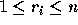

| History Grading |
Many problems in Computer Science involve maximizing some measure according to constraints.
Consider a history exam in which students are asked to put several historical events into chronological order. Students who order all the events correctly will receive full credit, but how should partial credit be awarded to students who incorrectly rank one or more of the historical events?
Some possibilities for partial credit include:
For example, if four events are correctly ordered 1 2 3 4 then the order 1 3 2 4 would receive a score of 2 using the first method (events 1 and 4 are correctly ranked) and a score of 3 using the second method (event sequences 1 2 4 and 1 3 4 are both in the correct order relative to each other).
In this problem you are asked to write a program to score such questions using the second method.
Given the correct chronological order of n events as where denotes the ranking of event i in the correct chronological order and a sequence of student responses where  denotes the chronological rank given by the student to event i; determine the length of the longest (not necessarily contiguous) sequence of events in the student responses that are in the correct chronological order relative to each other.
The first line of the input will consist of one integer n indicating the number of events with . The second line will contain n integers, indicating the correct chronological order of n events. The remaining lines will each consist of n integers with each line representing a student's chronological ordering of the n events. All lines will contain n numbers in the range , with each number appearing exactly once per line, and with each number separated from other numbers on the same line by one or more spaces.
For each student ranking of events your program should print the score for that ranking. There should be one line of output for each student ranking.
4 4 2 3 1 1 3 2 4 3 2 1 4 2 3 4 1
1 2 3
10 3 1 2 4 9 5 10 6 8 7 1 2 3 4 5 6 7 8 9 10 4 7 2 3 10 6 9 1 5 8 3 1 2 4 9 5 10 6 8 7 2 10 1 3 8 4 9 5 7 6
6 5 10 9